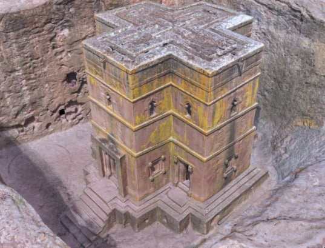
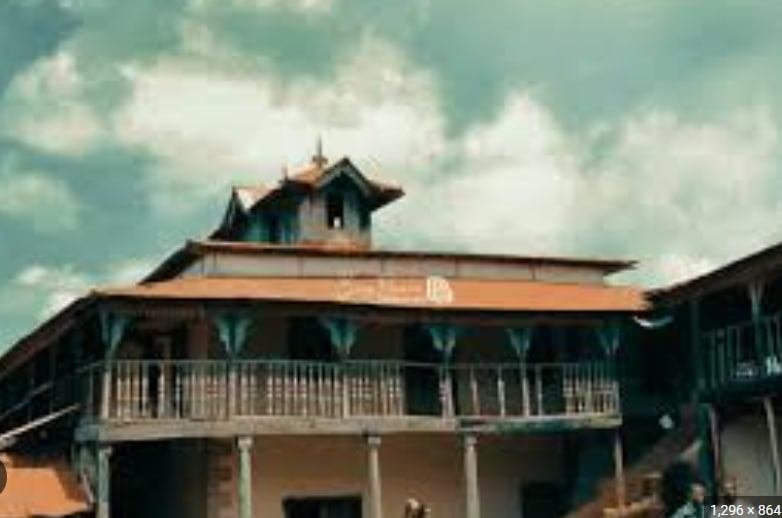

This rural town is known around the world for its churches carved from
within the earth from "living rock," which play an important part in the
history of rock-cut architecture.
Though the dating of the churches is not well established, most are thought to
have been built during the reign of Lalibela, namely during the 12th and 13th centuries.
LALIBELA

AXUM

It is the site of the historic capital of the Aksumite Empire,a naval and trading power
that ruled the whole region from about 400 BCE into the 10th century.
In 1980, UNESCO added Axum's archaeological sites to its list of World Heritage Sites due to their historic value.
Axum is located in the Central Zone of the Tigray Region, near the base of the Adwa mountains.
It has an elevation of 2,131 metres (6,991 feet) and is surrounded by La'ilay Maychew, a separately administered woreda of the Tigray region.
Jimma Abba Jifar

Aba Jifar Palace is the most important heritage site in the Oromia Region of Ethiopia, and a symbol of Oromia cultural identity.
Located on the outskirts of the city of Jimma, the capital of the region, the current Palace was built by King Aba Jifar II
in the 1880s on a site located seven kilometers north of Jimma and chosen by the Kings father.